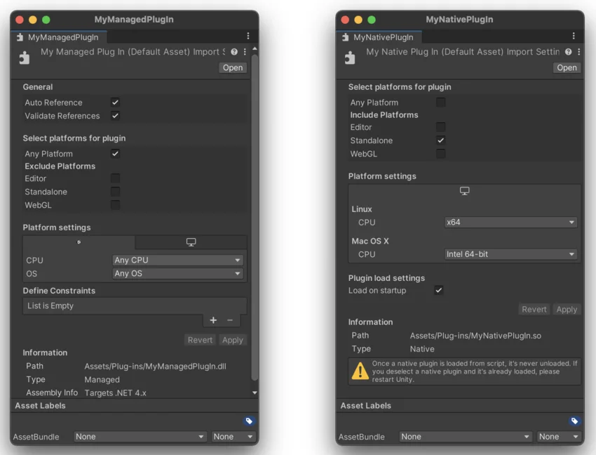
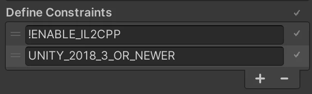

If you have a managed plug-inA managed .NET assembly that is created with tools like Visual Studio for use in Unity. More info
See in Glossary or a native plug-inA platform-specific native code library that is created outside of Unity for use in Unity. Allows you can access features like OS calls and third-party code libraries that would otherwise not be available to Unity. More info
See in Glossary, you can import it into Unity, then configure it. The Unity Editor treats a plug-in as an asset, similar to a script, and you can configure it in an Inspector window.
You can use the plug-in configurations to specify where a plug-in runs, on which platforms and platform configurations, and under what conditions.
The easiest way to import a plug-in to your project is to click and drag the plug-in to the Assets folder or one of its subfolders. Unity recognizes specific file and folder types as plug-ins. It can also apply default settings that match the plug-in’s intended platform.
Note: After Unity loads a native plug-in into memory, it remains loaded in the Unity Editor session. To change a native plug-in’s code after it has been loaded, you must restart Unity. Otherwise, the previous version of the plug-in remains in use. This problem only affects native plug-ins that run in the Editor, including in Play mode when the native plug-in architecture matches that of the currently running Editor.
Unity treats files with the following extensions as a plug-in:
Unity also treats certain folders as bundled plug-ins. Unity doesn’t look for additional plug-in files within these folders, so everything within the folder is considered a single plug-in. Unity treats folders with the following extensions as a bundled plug-in:
Unity automatically applies platform-specific default settings to the plug-in if the plug-in’s path within the Assets folder matches a platform-specific pattern. If the path doesn’t match any pattern, Unity applies the Editor platform default settings to the plug-in.
The following table shows the path patterns Unity recognizes. Portions of the path that appear in brackets are optional. When the path includes double dots, it can include more folders.
| Folder path patterns | Default settings |
|---|---|
| Assets/../Editor/(x86 or x86_64 or x64) |
Platform: Editor only CPU (optional): Based on the subfolder, if present. |
| Assets/../Plugins/(x86_64 or x86 or x64) |
Platform: Windows, Linux and macOS CPU (optional): Based on the subfolder, if present. |
| Assets/Plugins/iOS | Platform: iOS |
| Assets/Plugins/WSA/(SDK80 or SDK81 or PhoneSDK81)/(x86 or ARM) |
Platform: Universal Windows Platform SDK (optional): Based on the subfolder, if present. For compatibility reasons, SDK81 is Win81, PhoneSDK81 is WindowsPhone81. CPU (optional): Based on the subfolder, if present Note: You can use the keyword Metro instead of WSA. |
In Unity, plug-ins are either managed or native. The following table shows which settings are relevant for each type of plug-in:
| Setting | Managed | Native |
|---|---|---|
| Select platforms for plugin | yes | yes |
| Platform settings | yes | yes |
| Asset Labels | yes | yes |
| Asset Bundles | yes | yes |
| General | yes | |
| Define Constraints | yes | |
| Plugin load settings | yes |
To view and change plug-in settings in the InspectorA Unity window that displays information about the currently selected GameObject, asset or project settings, allowing you to inspect and edit the values. More info
See in Glossary, select the plug-in file in the Project window.

Note: If a plug-in is a Roslyn source code generator or analyzer, you must assign RoslynAnalyzer as an Asset Label in the plug-in settings.
Select platform for plugin and Platform settings specify in which builds Unity includes the plug-in.
| Platform | Description |
|---|---|
| Any Platform | Allows the plug-in to work with any platforms, including those that aren’t installed yet. If selected, this option changes the following individual platform selections from include to exclude logic. |
| Editor | For Play mode and for any scripts that run in Edit mode. |
| Standalone | Windows, Linux and macOS. |
| Any installed platform. | Any platform included in your Unity installation, such as Android, iOS and Web. |
For each selected platform, you can specify additional platform-specific settings such as CPU architecture and dependencies. Unity shows only settings that apply to your platforms and, where possible, to the specific plug-in type on that platform. For example, a native plug-in file with a .dll extension can only run on Windows, so Unity shows only Windows settings.
Note: Platforms can have their own specific plug-in settings, which aren’t described here. Refer to the appropriate Platform development topic for information about settings and behavior on individual platforms.
| Platform | Options | Description |
|---|---|---|
| Editor |
|
Most managed plug-ins are compatible with any CPU and OS. Most native plug-ins are only compatible with a single OS and, depending on how they were compiled, might be compatible with only a single CPU architecture. |
| Windows, Linux and macOS |
|
Managed libraries are typically compatible with any OS and CPU architecture, unless they access specific system APIs. Native libraries are only compatible with a single OS, but can be compatible with the 32-bit, the 64-bit, or both CPU architectures. |
| Universal Windows Platform |
|
For more information, refer to Use UWP plug-ins with IL2CPP. |
| Android | CPU architecture | The CPU architecture must match the architecture that the library was compiled for. Unity does not validate your settings. See also: AAR plug-ins and Android Libraries. |
| iOS and tvOS |
|
Specify the CPU architecture your plug-in is compatible with. Unity provides ARM64 and X64 Simulator architectures for testing purposes. When you select Add to Embedded Binaries option, Unity sets the Xcode project options to copy the plug-in file into the final application package. Do this for: • Dynamically loaded libraries. • Bundles and frameworks containing dynamically loaded libraries. • Any assets and resources that need to be loaded at run time. In the Compile Flags field, set the compile flags for plug-in source code files that Unity must compile as part of the build. |
Tip: For information on the other common settings, see Asset Bundles and Searching in the Editor.
Managed plug-ins can be third-party libraries or user-compiled assemblies that you want to include in the project.
The Auto Reference setting controls how assembly definitions in the project reference a plug-in file. When you enable Auto Reference, all predefined assemblies and assembly definitions automatically reference the plug-in file.
Auto Reference is enabled by default.
To limit the scope in which a plug-in can be referenced, disable Auto Reference. You then need to explicitly declare all references to that plug-in. You might want to do this if:
.unitypackage extension) or a UPM package. You can manage your packages from the Asset Store either on the online store or through the Package Manager window. More infoWhen you disable Auto Reference Unity cannot reference a plug-in from the predefined assemblies it creates for your project. These predefined assemblies contain all the scripts in your project that you have not assigned to another assembly using an assembly definition file. To reference classes, functions, or other resources from a plug-in that has the Auto Reference property disabled, the referencing code must be in an assembly created with an assembly definition file. For example, if a set of scripts in your project uses a plug-in, you must create an assembly definition file for those scripts, and add an explicit reference to the plug-in in the definition file.
More than one assembly can use the plug-in, but all assemblies must explicitly declare the dependency. To learn more about assembly definitions in Unity, refer to Assembly definitions.
Note: The Auto Reference option has no effect on whether a file is included in the build. To control build settings for plug-ins use Platform settings.
Unity can check that your plug-in’s references are available in the project. If you don’t perform this validation, users can encounter runtime errors when the application tries to use a missing reference.
Enable the Validate References option to check:
If you don’t want to check strong named references, but still want to check that references exist:
You can specify conditions under which Unity loads the plug-in to memory and references it. These conditions are symbols that must be satisfied, which means either defined or undefined.
Constraints work like the #if preprocessor directive in C#, but on the assembly level instead of the script level. You can learn more about constraints in Assembly Definition properties.
You can use any of Unity’s built-in define symbols, or add symbols in Project Settings > Player > Other Settings > Script Compilation > Scripting Define Symbols. The symbols you add are platform-specific, so you need to define them for each relevant platform. See Platform dependent compilation for more information, including a list of the built-in symbols.
Tip: To specify that a symbol must be undefined, prefix it with a negating ! (exclamation mark) symbol.
In the following example, we want Unity to load and reference the plug-in only on non-IL2CPP scripting runtimes for Unity 2018.3 or newer. We define two constraints, and both must be met:
ENABLE_IL2CPP is not definedUNITY_2018_3_OR_NEWER is defined
You can start executing unmanaged code that is independent of graphics initialization, scripts, asset loading, scenes, and so on. This is different to the default way a player loads a native plug-in, which is to wait until the first call to one of the plug-in’s functions, usually performed by a script.
To load plug-ins before the application executes any scripts:
UnityPluginLoad in the plug-in. Refer to Low-level native plug-in interface.Tip: For an example of a C# script calling plug-in functions, refer to Manual: Native plug-ins.